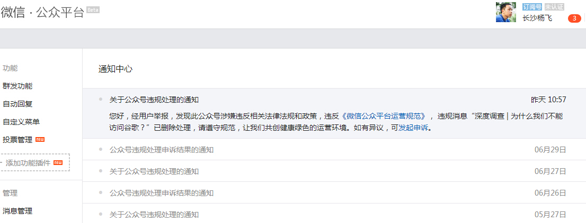

老杨随笔系列（23）
其实并没有群众举报
by 长沙杨飞
谷歌Google是地球上最大的互联网公司，其搜索、视频、地图、邮箱等业务量均为世界第一，光中国的安卓智能手机用户就至少四亿，用的都是谷歌的操作系统，但大家都用不了谷歌的app网上商店GooglePlay。谷歌被封很影响大家的生活，别的不说，自从谷歌学术搜索被封锁之后，不翻墙几乎无法写论文了。我琢磨着中国学术界总会有人发出点声音吧，没想到几年过去了一点动静都没有。
我一生气就自己开始研究。经过半年的努力，昨天这文章终于完成了草稿，名为《深度调查-为什么我们不能访问谷歌》。微信公众号推送之前我都会预览一下，看看格式错别字什么的。昨天上午十点半，我把这篇文章推送到自己的微信号yangfei789288预览一下，但手机微信上一直没反应。这真是神了，以前文章预览从来没出现过这种情况
过了半小时，微信公众号给我推送了一条通知：“您好，经用户举报，发现此公众号涉嫌违反相关法律和政策，违规消息“深度调查-为什么我们不能访问谷歌”已删除处理，请遵守规范，让我们共同创造健康绿色的运营环境。如有异议，可发起申诉”。

微信公众号删帖通知截图
这几年我有不少文章被微信微博管理员干掉，通知的第一句话都是“经用户（群众）举报。。。”我以前还总琢磨这些群众都是什么人，我的文章有理有据的，没有骂人，也没有抄袭，你到底举报我什么呢？今天总算明白了，原来并没有群众举报。谈谷歌的这篇文章是推送给我自己审稿的，怎么可能有用户举报？显然他们在撒谎。
通过关键词来审查文章不是啥新鲜事，一旦文章包含某些敏感词，或者有他们不同意发表的内容，一律删除。他们根据的是“有关法律和政策”。我很想知道到底违反了哪一条法律，为此我还曾申诉过几次，结果是徒劳的，依然告诉你违反了“有关法律和政策”，具体是哪一条，对不起就不告诉你。
本来这事我挺生气，后来一想微信管理员还算客气的，删文章至少还通知了我一下。中国的网络管制有一个特点：悄悄地封，一般不见公告。上亿人在使用谷歌的商店、搜索、地图和各种服务，屏蔽谷歌这么大的事，即便不新闻联播，怎么着也该在报上登个启事吧？此种行为就好像半夜把桥炸了却不在桥头立个牌子，相当缺德。
出版审查自古有之，焚书坑儒可不是闹着玩的。审一审又不是什么丑事，你们看着删就是了，没有必要假借“群众”之口吧？其实群众是很想知道谷歌为什么不可以访问的，只是你们不想让群众知道。请不要侮辱群众的智商。
顺便做个广告，请关注杨飞摄影 www.midphoto.com
，谷歌这篇文章下周将在这里发表。目前这个网站还可以自由访问。这是我的个人网站，我自己是管理员。该站的服务器在英国。就算哪天IP被封也问题不大，搭个梯子爬个墙对很多群众来说不算事吧，不然也不用在中国学术圈混了。
杨飞，
2015/10/14，长沙
----------------------------------
关注老杨作品：
1，杨飞摄影 www.midphoto.com
2，微信：yangfei789288
3，微信公众号：长沙杨飞
4，新浪微博@长沙杨飞
5，推特Twitter@feiyang17
6，Facebook：yangfei999999@hotmail.com